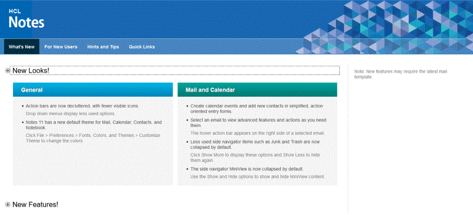
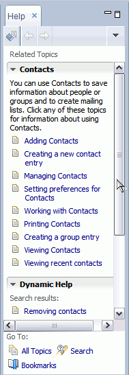

Getting started
Welcome to the latest release of HCL Notes®. Notes® is a powerful, multifaceted software for Microsoft® Windows® and Macintosh computers that gives you instant access to all the information that is important to you. You can use Notes® to send and receive Internet mail, schedule appointments, browse the Web, and to use applications designed for use with Notes.
Discover Page
The Discover Page provides a starting point for Notes users. From the Discover Page you can see information about new features, get helpful hints on using Notes, and quickly access your Notes applications.

Home Page
The Home Page gives you immediate access to your mail, contacts, calendar, and more.
And you can create new Home Pages, customized to suit your needs. From the Discover
Page, select the Quick Links tab, then choose
Change your Home Page under the Additional
Resources
menu.
Help
Help is available while you are exploring Notes®. Press F1 (Macintosh OS X users, Command+Shift+?, Linux® users, press Ctrl+F1) to open context sensitive Help. Context sensitive help opens to a list of topics relating to the task you were performing when you pressed F1. When you open Help this way, it displays in a side panel that you can keep available while you work. You can easily view a list of all topics or search the Help in this side panel using the links in the panel.

To open Help in its own window, click from the main menu. To send a Help topic to someone else, right-click
the topic in the Table of Contents, and select Save Target as . . . (HTML)
then, attach the saved HTML file to an email.
Advanced menus
For advanced users, a set of advanced menus can be displayed. Advanced menus are targeted for administrators or designers, and include options such as archiving or deleting applications, or replacing a Notes® application design. If you enable advanced menus (), they are available for subsequent Notes® sessions.
Opening applications
If you opened your applications from the File menu () in previous releases, you may notice that the File menu has changed, and you now use .
The Open List
Or, you can click the Open button and select an application from the list or from the Applications folder.
The Open list is a convenient way to open applications. Simply click the Open button and the Open list displays all the applications and bookmarked documents available to you. Then, when you have made your selection, the Open list closes without taking up room in your Notes® window. You can dock the Open list so that it displays as the familiar list of icons on the side of your Notes® window if you prefer that.
The Sidebar
The sidebar gives you easy and continuous access to applications you use to chat with your Sametime® contacts, view a day-at-a-glance calendar, check feeds you subscribe to in a Feed Reader, and keep track of activities. To float a sidebar application, right-click it and select Open in new window. When you close the application, it snaps back to the sidebar. Depending on how your system is set up, you may have access to one or all of these sidebar applications.
- Sametime® Contacts -- Use Sametime® to chat with your colleagues in real time. Manage your contact list.
- Day-At-A-Glance -- Get a quick view of your schedule for the day.
- Feeds -- Stay up to date with the latest news from Web sites and applications you choose.
- Activities -- Share files, To Dos, Web links, and messages with your coworkers. Assign and comment on team activities.
- My Widgets -- Create and share Web and Notes-based widgets.
The first time you open HCL Notes®, the sidebar is in the thin state. The following image shows a comparison of the sidebar in the thin state and in the open state.
Search
The search capability gives you the option of using a Notes® style search, or a Web-style search. Similar to searching on your favorite Web sites, Search appears in the current window, and is always available. Simply click the arrow to select the type of search you want, or to view recent searches.